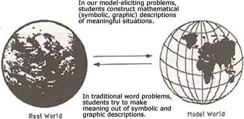
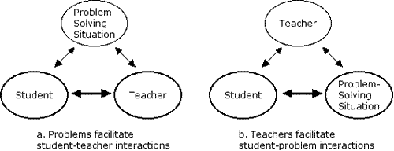
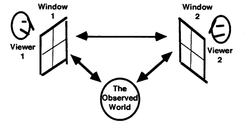
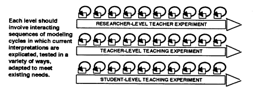
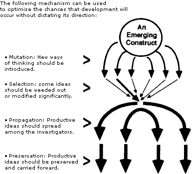
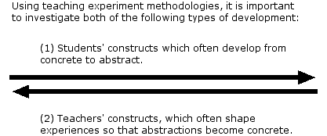

|
||||||
|
||||||
|
Richard Lesh Anthony Kelly |
||||||
| In this chapter, special
attention is given to three-tiered teaching experiments in which a 15-week
teaching experiment for students is used as the context for a 15-week teaching
experiment for teachers, which in turn is used as the context for a 15-week
teaching experiment for researchers. As Table 9.1 suggests, Tier 1 of such
projects may be aimed a investigating the nature of students’ developing
knowledge and abilities: Tier 2 may focus on teachers’ developing assumptions
about the nature of students’ mathematical knowledge and abilities:
and, Tier 3 may concentrate on researchers’ developing conceptions
about the nature of students’ and teachers’ developing knowledge
and abilities.
For the kind of three-tiered teaching experiment outlined in Table 9.1, each tier can be thought of as a longitudinal development study in a conceptually enriched environment (Lesh, 1983). That is, a goal is to go beyond studies of typical development in natural environments to focus on induced development within carefully controlled environments. For example, at the student-level tier, three-tiered teaching experiments have proved to be especially useful for studying the nature of students’ developing knowledge about fractions, quotients, ratios, rates, and proportions (or other ideas in algebra, geometry, or calculus), which seldom evolve beyond primitive levels in natural environments that are not enriched artificially.
|
||||||
|
TABLE
9.1
|
||||||
|
In the United States, the term teaching experiment became popular following the publication of a series of books entitled Soviet Studies in School Mathematics (Kilpatrick & Wirszup, 1975). One reason this term struck a responsive chord among mathematics and science educators was because of a long-standing tradition in which significant research tended to be embedded within an integrated approach to research and development (with interactions between teaching and learning). For example, in some studies, learning environments were developed using software and/or concrete manipulatives; yet, at the same time, investigations were conducted to examine the development of students' knowledge within these environments. Therefore, the research tended to involve feedback loops in which information about the development of students influenced the development of software, and information about the development of software influenced the development of students. Nonetheless, even though most teaching experiments tend to involve some form of teaching, it is not necessarily for them to involve teachers, nor is it necessary for the organism that is learning or solving problems to be an individual. For example:
In general, for the type of teaching experiment that is emphasized in this chapter, the goal is not to produce generalizations about: (a) students (e.g., she is a concrete operational child; he is impulsive, or creative, or left-brained, or suffers from dyslexia); (b) teachers (e.g., his beliefs are consistent with a constructivist philosophy of learning); or (c) groups (e.g., they have not adopted a taken-as-shared notion of what it means to justify a claim). Instead, the primary goal is to focus on the nature of developing ideas (or "smart tools," models, or metaphors in which these ideas are embedded), regardless of whether the relevant development occurs in individuals or in groups. A
PRIMARY DILEMMA UNDERLYING TEACHING Because a goal of most teaching experiments is to go beyond descriptions of successive states of knowledge to hypothesize the processes and mechanisms that promote development from one state to another, it is important to create research environments that induce changes in the subjects whose knowledge or abilities are being investigated while minimizing uninteresting influences that are imposed by authority figures (e.g., teachers or researchers).3 Regardless of whether a researcher's primary aim is to observe, or to document change, or to measure, when teaching experiment methodologies are used, the following fundamental dilemma tends to arise. If the research is designed to find ways to think about the nature of students' mathematical knowledge (or abilities), then how can the researchers also be inducing changes in that knowledge? If the researcher is inducing changes in subjects (e.g., through teaching or through carefully structured sequences of problem solving experiences), then how can the researcher also be studying the nature of the change that occurs? How can researchers avoid simply observing what they themselves created? How can they measure change (or document change or observe change) at the same time that they are changing the measures (or the documentation systems or the observation schemes)? Answers to these questions hinge on the fact that, in well-designed teaching experiments, it is possible to create conditions that optimize the chances that development will occur without dictating the directions that this development must take. For instance, this can be accomplished by: (a) creating environments where investigators (students, teachers, and researchers) confront the need to develop new conceptions (or interpretations) of their experiences; (b) structuring these interactions so that the preceding constructs must be tested, assessed, extended, refined, rejected, or revised for a specific purpose (e.g., to increase their usefulness, stability, and power in the execution of a concrete task); (c) providing tools that facilitate (but do not needlessly constrain) the construction of relevant models; and (d) using formative feedback and consensus building to ensure that these constructs develop in directions that are continually "better" without merely testing preconceived hypotheses about a predetermined definition of "best." In other words, the environment should "press for adaptation" (Noddings, 1990) by facilitating the construction and testing of basic constructs, so that some will be ruled in and others ruled out. Using techniques that are described in chapter 21 of this book, about model-eliciting activities, it also is possible to structure tasks in such a way that each of the relevant investigators (students, teachers, and researchers) simultaneously learns and documents what he or she is learning. To accomplish these goals, it is important to provide rich opportunities for the investigators (students, teachers, and researchers) to represent and reflect upon their knowledge. This can be done by focusing on problem solving or decision making activities in which the results that the investigators develop inherently involve descriptions, explanations, or justified predictions that reveal explicitly how they are interpreting the problem solving situation (Kaput, 1985, 1987). In this way, as constructs develop, a continuous trail of documentation is produced that automatically provides traces of development. Thus, investigators at all levels can view them in retrospect to clarify the nature of the learning that occurred. In other words, by providing rich opportunities for investigators to express, test, and refine their evolving constructs, it is possible to simultaneously stimulate, facilitate, and investigate the development of key constructs, understandings, and abilities. Also, because significant changes often occur during relatively brief periods of closely monitored time, many changes and inducements for change can be documented explicitly so that it is possible to go beyond descriptions of successive states of knowledge to focus also on the mechanisms that promote development from one state to another. DIFFICULTIES
THAT LED TO THE DEVELOPMENT OF The following difficulties are among the most significant that led to the development of the kind of multitiered teaching experiments that is described in this chapter. First, for many concepts that we want to investigate, most students' relevant knowledge seldom develops beyond primitive levels as long as their mathematical experiences are First, for many concepts that we want to investigate, most students' relevant knowledge seldom develops beyond primitive levels as long as their mathematical experiences are restricted to those that occur naturally in everyday settings. Therefore, to investigate the development of these concepts, artificially rich mathematical environments need to be created. and observations need to be made during time spans when significant developments are able to occur. Second, in the preceding investigations, after conducting interviews designed to identify the nature of a given student's knowledge, the authors often conducted instructional activities designed to change the student's understandings and abilities. During the course of these instructional activities, the authors often found the conclusions that they had formed that were based on initial interviews needed to be revised significantly. Often, one of the best ways to find out about a student's state of knowledge is to try to teach him or her something (or to induce changes in that state of knowledge). Consequently, for yet another reason, a goal for relevant research is to preserve traces that document the nature of the developments that occur.
|
||||||
|
 FIG. 9.1. The difference between model-eliciting problems and traditional word problems. |
||||||
|
Third, as FIG. 9.1 suggests, for many of the problem solving situations that the authors want to emphasize, the processes that are involved are almost exactly the opposite of those that are involved in traditional word problems where the most important stages of problem solving seldom involve mathematization (i.e., quantification or other types of mathematical interpretation), and the results that students produce seldom involve descriptions, constructions, explanations, or justifications in which they must reveal explicitly how they interpret the problem solving situation. Consequently, if nontraditional problems are emphasized, the following dilemmas tend to arise, which require researchers to think in new ways about issues such as the possibility of standardized questions:
THE NEED FOR SHARED RESEARCH DESIGNS The kind of multitiered teaching experiment that is described here was designed to be useful in action research projects in which teachers act as investigators (as well as participants) and/or researchers act as teachers or learners (as well as investigators). Furthermore, it is intended to be useful as a shared research design for large research and development projects in which it is important to coordinate the activities of multiple researchers with multiple purposes at multiple sites. For example, it has been used extensively in The Rational Number Project (Behr et al., 1991), The Project On Using Mathematics in Everyday Situations (Lesh, 1985b), The Project on Models & Modeling in Mathematics & Science Education (National Center for Improving Student Learning and Achievement in Mathematics and Science, 1998), and SimCalc (Kaput & Roschelle, 1993). In these projects, one goal was for the overall research designs to be sufficiently structured to give shape to the information that was being drawn from different levels and types of isolated studies. Yet, it was also important for the overall research designs to be sufficiently open to provide access for participants whose perspectives and interests often varied because of different assumptions and perspectives related to the following kinds of factors. What Factors Are the Center of Attention? For the type of teaching experiment that is emphasized in this chapter, the subjects may range from individual students, to groups of students, to teachers, to classroom discourse, communities involving both teachers and students, or schools and surrounding communities Also the entities whose development is being investigated may be the smart tools (models, metaphors, or representational systems) that students develop for dealing with a given class of problems. Therefore, some teaching experiments result in generalizations about the nature of students' conceptual and procedural tools, whereas others result in generalizations about the nature of students, teachers, groups, software, or other entities. Some of the most common sources of design flaws in teacher experiments tend to result from a lack of clarity and consistency about what entities the research is intended to yield generalizations. For example, studies that are intended to yield generalizations on the nature of productive learning environments (software, concrete manipulatives, or realistic problem solving activities) generally need to be governed by a logic that is quite different from that in studies intended to yield generalizations on the nature of students' (or teachers') knowledge or tools. What Theoretical Windows Are Emphasized? Regardless of whether the researcher focuses on ideas developing in students, students developing in groups, groups developing in classrooms, or classrooms in schools, each level of analysis tends to highlight or clarify some aspects of the situation while, at the same time, de-emphasizing or distorting others. Choices about the subjects and the level of detail of the analysis are similar to choices about how far up or down to turn a microscope or telescope in a laboratory for a biology or astronomy task. Furthermore, when a research project chooses to adopt a given theoretical perspective, the choice is also somewhat like choosing a window through which to view the subjects. Depending on the choices
that are made about theoretical windows and level of detail, a given investigation
is likely to collect different information, and different patterns or
regularities are likely to be emphasized. For example, in a multitiered
teaching experiment, a teacher's-eye view of a situation may produce results
that are quite different than those generated from a student's-eye-view
or a researcher's-eye view. Or, when a teaching experiment includes a
series of interviews, the nature of these interviews often differs significantly
depending on whether the researcher interprets the interviews to involve
mainly student-teacher interactions (see FIG. 9.2a), where the problem
may be seen as being a relatively insignificant device to facilitate this
interaction, or student-problem interactions (see FIG. 9.2b), where the
teacher may be seen as being mainly a device to facilitate this
|
||||||
|
 FIG. 9.2. Different viewpoints and philosophies produce different interpretations. |
||||||
|
Perhaps social constructivists might emphasize interviews of the type the depicted in FIG. 9.2a, whereas cognitive constructivists might emphasize interviews of the type shown in FIG. 9.2b. But, such labels tend to be far too crude to predict accurately the assumptions or procedures of individual researchers. For example, in their research, the authors of this chapter generally take an integrated approach to both the cognitive and social aspects of learning. Yet, In the components of their projects where interviewing or teaching are involved, situations that are characterized mainly by FIG 9.2a tend to be far less productive than those characterized mainly by FIG 9.2b.4 On the other hand, in chapter 13 of this book, by Steffe and Thompson, the interviews that they describe clearly emphasize interactions of the FIG 9.2a type; however, both Steffe and Thompson usually considered to be leading spokesmen for the cognitive constructivist perspective. The points here are not to label people or to make a simplistic association of specific interviewing techniques with crude labels for theoretical perspectives. In fact, in this chapter, the authors do not even want to argue that one approach or perspective is more productive than another. Instead, the point is that one of the main operating principles underlying multitiered teaching experiments is to juxtapose systematically several alternative perspectives and to seek corroboration through triangulation.
|
||||||
|
 FIG. 9.3. The corroboration-through-triangulation principle. |
||||||
|
For the kind of multitiered teaching experiment discussed herein, a corroboration-through-triangulation principle (see FIG. 9.3) may involve three distinct types of mismatches:
For instance, a given person's interpretation of a situation may vary from time to time depending on factors such as whether their perspective is articulated during the course of an ongoing activity, or whether it is based on a more detached, after-the-fact view of a videotape of the completed session. Therefore, one way to encourage the development of each interpretation is to juxtapose these two perspectives and to press for their integration or another form of adaptation. What Practical Problems Are Treated as Priorities? What is observed in a research setting also depends on the perceived purpose of the information that is to be collected or generated For instance, for the type of teaching experiment that is the topic of this chapter, these purposes include issues that involve:
Regardless of whether a given researcher focuses on the development of students, teachers, groups, software, or other entities that interact during teaching and learning, a basic assumption that underlies the kind of teaching experiment that is described in this chapter is that none of these adapting, and self-regulating systems develops in isolation from one another. Consequently, the kinds of research designs that have proved to be most productive for investigating the nature of these entities tend to focus on both development (not just on isolated static glimpses of development) and interactions (not just on isolated entities). In general, only incomplete pictures of development arise from isolated studies that focus exclusively on one or two of the preceding entities, or from studies that focus exclusively on isolated states of development rather than on the mechanisms that drive development from one state to another. Therefore, to conduct the kind of complex, multidimensional, and longitudinal studies that are needed, the notion of a partly shared research design has evolved to help coordinate the work of multiple researchers at multiple sites. The multitiered teaching experiments described in this chapter are examples of these partly shared research designs. THE
CONSISTENCY PRINCIPLE FOR RESEARCH DESIGNS Another basic assumption underlying the design of multitiered teaching experiments is that, in spite of obvious differences among the three levels of investigators (students, teachers, and researchers), all of them are engaged in making sense of their experiences by developing smart tools (constructs, models, conceptual systems, belief systems, and representational systems) that are used to generate descriptions, explanations, constructions, and justifications using a variety of representation systems (e.g., systems of written symbols, systems of graphic images, or systems involving concrete manipulatives, experience-based metaphors, or spoken language). Two corollaries of this assumption are that similar cognitive characteristics should be expected from the investigators at each tier, and that at each tier, similar mechanisms also should be expected to contribute to the construction, integration, differentiation, reorganization, and refinement of each of the relevant conceptual systems. To see how these preceding two corollaries influence the design of multitiered teaching experiments, this section focuses on relevant results from several recent studies in which the student-level teaching experiments consisted mainly of 60-minute sessions in which three- person teams of students worked on a series of model-eliciting problems with the following characteristics:
Cognitive Characteristics of Investigators (Students, Teachers, and Researchers) When student-level teaching experiments are centered around sequences of the preceding kinds of model-eliciting activities, the results showed consistently that the students' initial interpretations tend to be strikingly barren and distorted compared with the conceptions that developed later (chap. 23, this volume). For example, early interpretations frequently are based on only a small subset of the information that is relevant; yet, at the same time, inappropriate prejudices are often "read into" the situation that were not given objectively. Based on this observation, the consistency principle for research design suggests that, when teacher-level and researcher-level teaching experiments are used to accompany such modeling cycles also, and that for the researchers and teachers, just as for the children, first-cycle interpretations should be expected to be rather barren and distorted compared to those that should evolve after several cycles. In a multitiered teaching experiment, it is seldom enough for researchers to view videotapes only once or twice before extracting quotations that they believe are indicative of the students' ways of thinking. As its name implies, teaching experiments usually need to involve a series of experiments during which the constructs that are being developed should be tested repeatedly while they are being gradually modified, extended, and refined. As FIG. 9.4 suggests, at each tier of a multitiered teaching experiment, a series of modeling cycles usually is needed, and, during each cycle, the relevant investigators should be challenged to: (a) reveal their current interpretations by making them explicit, (b) test and assess their current interpretations, (c) reflect upon their current interpretations, and (d) gradually refine, reorganize, extend, or reject their current interpretations. In particular, researchers are not exempt from these rules.
|
||||||
|
 FIG. 9.4. The iterative model-refinement principle. |
||||||
|
For researchers as well as for teachers and students, data interpretation should not be left until the end of the project when all of the data collection has been completed. The iterative model-refinement principle says that if no researcher-level model testing takes place throughout the study, then no modeling cycles are likely to occur, and little model development is likely to take place.5 General Mechanisms That Promote Construct Development Observations in the previous section raise another key question that a coherent research design should address, namely: How is it that investigators (students, teachers, and researchers) are able to develop beyond the inherent inadequacies of their initial interpretations of their experiences? Or to express it differently: When early interpretations of the givens and goals are barren and distorted, what processes can students, teachers, and researchers use to guide themselves through a series of models that are progressively better without having a predetermined conception of best? Results from student-level experiments suggest that the driving forces underlying the development of conceptual systems are similar to those that apply to other types of adapting and self-organizing systems (Kauffman, 1993, 1995). For example, in student-level teaching experiments that involved the kind of model-eliciting activities that were described at the beginning of this section, the modeling cycles that students go through are inclined to be remarkably similar to the stages of development that Piaget and other developmental psychologists had observed over time periods of several years in longitudinal development studies investigating the natural evolution of children’s proportional reasoning capabilities (Lesh & Kaput, 1988). In other words, when new constructs are developed during the solution of a single 60-minute model-eliciting activity, this is merely another way of saying that significant local conceptual developments tend to occur, and the mechanisms that contribute to development tend to be strikingly similar to those that have been identified by Piaget (Piaget & Inhelder, 1974) and by current researchers investigating complexity, chaos, and adapting self-organizing systems (Kauffman, 1993, 1995). Implications from modern theories of dynamic systems are similar in many ways to those that have been used in the past to explain the development of complex systems. For example:
Therefore, the consistency principle for research design implies that, for development to occur at any of the levels of a multitiered teaching experiment, researchers should anticipate that mechanisms must be created to provide for mutation, selection, propagation, and preservation of the relevant systems whose development is to be encouraged (see FIG. 9.5). Examples are given shortly. First, it is useful to describe a few more similarities and differences between the models and modeling activities of students, teachers, and researchers.
|
||||||
|
 FIG. 9.5. Mechanisms that are driving forces for construct development. |
||||||
|
SIMILARITIES AND DIFFERENCES BETWEEN STUDENTS, TEACHERS, AND RESEARCHERS The language of models and modeling has proved to be a powerful unifying theme for describing similarities among the construct development activities of students, teachers, and researchers; and, it also has proved to be useful for helping researchers and curricula designers to establish relationships connecting their work in mathematics, science, and everyday problem solving situations. To make use of modeling theory in the context of three-tiered teaching experiments, it is important to emphasize that students, teachers, and researchers are all decision makers (i.e., problem-solvers) who often make decisions at times when: (a) an overwhelming amount of relevant information is available, yet, the information needs to be filtered, weighted, simplified, organized, and interpreted before it is useful; (b) some important information may be missing, or it may need to be sought out, yet, a decision needs to be made within specified time limits, budgets, constraints, and margins for error, or (c) some of the most important aspects of the situation often involve patterns of regularities beneath the surface of things, or they may involve second-order constructs (such as an index of inflation) which cannot be counted or measured directly but that involve patterns, trends, relationships, or organizational systems that can be described in a variety of ways and at a variety of levels of sophistication or precision (to fit different assumptions, conditions, and purposes). When humans confront problem solving situations where both too much and not enough information may be available, they simplify and make sense of their experiences using models (or descriptive systems embedded in appropriate external representations). For example:
According to these perspectives, expertise (for students, teachers, or researchers) is not considered to be reducible to a simplistic list of condition-action rules. This is because mathematics entails seeing at least as much as it entails doing. Or, to state the matter somewhat differently, one could say that doing mathematics involves (more than anything else) interpreting situations mathematically; that is, it involves mathematizing. When this mathematization takes place, it is done using constructs (e.g., conceptual models, structural metaphors, and other types of descriptive, explanatory systems for making sense of patterns and regularities in real or possible worlds). These constructs must be developed by the students themselves; they cannot be delivered to them through their teachers' presentations. Similarly, the ability of teachers to create (or interpret, explain, predict, and control) productive teaching and learning situations quickly and accurately depends heavily on the models that they develop to make sense of relevant experiences. For example, research has shown that: (a) some of the most effective ways to change what teachers do is to change how they think about decision making situations (Romberg, Fennema, & T. Carpenter, 1993); (b) some of the most effective ways to change how teachers interpret their teaching experiences is to change how they think about the nature of their students' mathematical knowledge (T. Carpenter, Fennema, & Romberg, 1993); and (c) some of the most straightforward ways to help teachers become familiar with students' ways of thinking are by using model-eliciting activities in which the teachers produce descriptions, explanations, and justifications that reveal explicitly how they are interpreting learning and problem solving situations (Lesh, Hoover, & Kelly, 1993). Nonetheless, in spite of the preceding similarities between students' mathematical models and the conceptual systems (or models) that are needed by teachers in their decision making activities, some striking dissimilarities exist too. For instance, the conceptual systems that underlie children's mathematical reasoning are often easy to name (e.g., ratios and proportions) and easy to describe using concise notation systems (e.g., A/B = C/D), but when attention shifts from children's knowledge to teachers' knowledge these illusions of simplicity disappear. Clearly, teachers' mathematical understandings should involve deeper and higher order understandings of elementary mathematical topics; and, equally clearly, these understandings should be quite different from the superficial treatments of advanced topics that tend to characterize the mathematics courses in most teacher education programs. But what does it mean to have a deeper or higher order understanding of a given, elementary-but-deep, mathematical construct? One can speak about the development of a given mathematical idea in terms that are: (a) logical, based on formal definitions, explanations, or derivations; (b) historical, concerning the problems, issues, and perspectives that creates the need for the idea; (c) pedagogical, relating to how the idea is introduced in available curricular resources (e.g., textbooks, software, videos) or how to make abstract ideas more concrete or formal ideas more intuitive; or (d) psychological, including knowledge about common error patterns, naive conceptualizations, typical stages through which development generally occurs, and dimensions along which development generally occurs. Therefore, a profound understanding of an elementary mathematical idea surely involves the integration of these mathematical-logical-historical-pedagogical-psychological components of development. But what is the nature of this integrated understanding? How does it develop? How can its development be encouraged and assessed? These are precisely the sorts of questions that teacher-level teaching experiments, of the type described in the next section, are designed to address. AN EXAMPLE: SPECIFIC WAYS TO STIMULATE AND FACILITATE CONSTRUCT DEVELOPMENT AT THE TEACHER LEVEL OF A THREE-TIERED TEACHING EXPERIMENT To investigate teachers' (typically undifferentiated) mathematical-psychological-pedagogical understandings about the nature of mathematics (or about the ways in which mathematics is useful in real-life situations), one type of three-tiered teaching experiment that has proved to be especially effective is one in which the student level consists of students working in three-person teams on a series of model-eliciting activities designed to reveal useful information about the nature of these students' mathematical understandings. When students are working on sequences of such tasks, these settings provide an ideal context for teacher-level teaching experiments focusing on the following kinds of real-life, decision making activities for teachers that involve: (a) writing performance assessment activities that are similar to examples that are given of model-eliciting activities and that yield information about students that informs instruction;6 (b) assessing the strengths and weaknesses of such activities;7 (c) assessing the strengths and weaknesses of the results that students produce in response to the preceding problems;8 (d) developing observation forms to help teachers make insightful observations while students are working on the problems, and (e) developing a classification scheme that teachers can use, during students' presentations of their results, to recognize the alternative ways of thinking that students can be expected to use. In other words, real-life problem solving activities for students provide the basis for some of the most useful kinds of real-life decision making activities for teachers. As an example of a three-tiered teaching experiment in which the aforementioned kinds of teacher-level tasks were used, it is helpful to focus on the series of studies that led to the design principles that are described in chapter 21 of this book. Throughout these studies, the goals for the teachers were to work with the research staff to develop a collection of performance assessment activities for their own students and to design principles to help other teachers develop such problems, together with the appropriate observation forms, response assessment forms, and other materials to accompany the collection of example problems. To accomplish these goals, a series of diverse groups of expert teachers worked together in weekly seminars over 15-week periods. Each seminar lasted approximately 2 hours. In each session, participating teachers engaged in the following kinds of activities in which they continually articulated, examined, compared, tested, refined, and reached consensus about their shared conceptions of about excellent problem solving activities for their students:
Throughout these sessions, the main criteria that were used to judge the quality of the activities that teachers wrote were based on empirical results with students. That is, tasks were judged to be excellent mainly because the results that students produced provided useful diagnostic information about their conceptual strengths and weaknesses. So, when teachers wrote activities for their students, their goal was to develop problems with the characteristic that when they (the teachers) roamed around their classrooms observing students who were working on these problems and when they examined the results that their students produced, the results would yield information similar to the kind that might have been generated if the teachers had had enough time to interview most of the students individually. Similarly, as teachers were trying to create activities to investigate the nature of students' mathematical knowledge, researchers were trying to create activities to investigate the nature of teachers' knowledge. To accomplish this goal, the key to success was based on the fact that, when teachers explained why they thought specific tasks were good (or why they thought specific pieces of their students' work were good), they automatically revealed a great deal of their own assumptions about the nature of mathematics, problem solving, learning, and teaching. As the teachers' authoring capabilities improved, the records from their seminars and written work produced a continuous trail of documentation that could be examined by both them and the research staff to reflect on the nature of the teachers' developing knowledge and abilities. The mechanisms that served as drivers for this development were particular instances of those that were described earlier in this chapter: mutation, selection, propagation, and preservation. Mutation The goal here is to "perturb" the constructs (models) that teachers have developed about what mathematics is, how students think mathematically, and how to encourage growth in mathematics through instructional interventions. New modes of thinking were stimulated in the following kinds of ways by: (a) identifying examples of students' work where surprising insights often were apparent about their conceptual strengths and weaknesses; (b) using discussion sessions in which teachers generated specific problems and rules of thumb for writing such problems; (c) discussing perceived strengths and weaknesses for example problems that were chosen by the researchers of the teachers; or (d) using brief brainstorming sessions in which the goal was to generate interesting, "wild, new ideas" to consider during the following week’s authoring activities. Selection As a result of the mutation activities, a number of new ideas tended to be produced about good problems, how to write them, and the nature of students' developing knowledge and abilities. However, the new ideas were not necessarily good ideas. Therefore, in order to help teachers select the better from the poorer ideas, the following three types of selection activities were used: (a) trial by consistency, in which individual teachers were encouraged to make judgments about whether or not a suggestion makes sense or is consistent with their own current conceptions and experiences; that is, the teacher, as the constructor of knowledge, is the ultimate arbiter; (b) trial by ordeal, in which a teacher's ideas and examples were field-tested promptly with students and were found either to be useful or not, based on the results that students produced; (c) trial by jury, in which teachers were encouraged to compare ideas with their peers and to discuss the likely strengths and weaknesses of alternative suggestions. This introduces the notion of community apprenticeship into the model. These discussions were not intended to be punitive. Instead, they were designed to help teachers develop defensible models of mathematics, problem solving, teaching, and learning and organize the various suggestions into a coherent conceptual system so that suggestions were not adopted merely because they were novel. The goal was not to develop individual constructs for thinking about the nature of excellent activities; it was to develop shared constructs. Propagation The goal here was for good ideas, which had survived the preceding tests, to spread throughout the population of teachers. This was accomplished not only through the seminars and discussions, but also by using electronic mail and easily shared, computer-based files, In this way, it was easy for teachers to share useful tools and resources, effective authoring procedures, and productive conceptual schemes. Preservation Again, the accumulation of knowledge was encouraged by using videotapes and computer-based files to preserve written records of ideas that proved to be effective and by putting these ideas in a form that was easy for teachers to edit and use in future situations. Therefore, the "survival of the fittest" meant that successful ideas and strategies continued to be used and that they continued to be refined or improved by other teachers. Thus, the body of shared information that developed was grounded in the personal experience of individual teachers. As a consequence of these teacher-level teaching experiments, the teachers developed, tested, and refined six principles for creating (or choosing) excellent tasks that they referred to as performance assessment activities. The results of these activities are described in chapter 21 of this book. AN EXAMPLE: SPECIFIC WAYS TO STIMULATE AND FACILITATE CONSTRUCT DEVELOPMENT AT THE RESEARCHER LEVEL OF A THREE-TIERED TEACHING EXPERIMENT The consistency principle of research design suggests that, in general, similar research design principles that apply to student-level and teacher-level teaching experiments also apply in straightforward ways to research-level teaching experiments. In particular, it is important to generate environments in which researchers need to create explicit descriptions, explanations, and predictions about teachers' and students' behaviors. Then, mechanisms need to be perplexed to ensure that these constructs will be tested, refined, revised, rejected, or extended in ways that increase their usefulness, stability, fidelity, and power and that a trail of documentation will be created that will reveal the nature of the evolution that takes place. For the series of three-tiered teaching experiments described in the previous section, students developed constructs to describe mathematical problem solving situations; teachers developed constructs to describe activities involving students; and researchers developed constructs to describe activities involving teachers (and students). One of the ways in which researchers got feedback about their evolving conceptions of teachers' expertise was to select and organize illuminating snippets from the transcripts that were made during teachers' discussion groups that were held each week. Then, participating teachers selected, rejected, revised, and edited these snippets in ways that they believed to be appropriate. Consequently, these teachers were true core searchers in the researcher-level teaching experiments which, from the researchers' point of view, were aimed at clarifying the general nature of the teachers’ evolving conceptions or at the development of expertise in teaching. It should be noted that the procedure described in the foregoing paragraph is in stark contrast to research studies in which researchers collect a mountain of records and videotapes, and then go off by themselves in a single attempt to make sense of their data, with no feedback from the participants and often no refinement cycles of any kind. One is led to wonder what researchers would think if participating teachers were given records and videotapes of the researchers' activities during the project and if the teachers published papers about the nature of researchers that used unedited fragments of things that researchers had been quoted as saying at some point in the study. Surely, researchers would consider these spontaneous sound bites to be poor indicators of their real thinking on the relevant topics. Surely, researchers would want to edit the quotations and make them more thoughtful. The consistency principle of research design suggests that teachers might feel similarly about the ways that researchers might use quotations from their activities and discussions. For example, in one of the three-tiered teaching experiments of the type prescribed in the previous section, the following conclusions were stated:
In considering these points, it is important to emphasize that, rather than using the teachers' unrehearsed, unpolished, impromptu comments as data that were interpreted exclusively by the researchers, a large share of the responsibility for their selection, interpretation, elaboration, and refinement devolved on the teachers themselves as they gradually refined their notions about what it means to be a consistently effective tutor. This does not imply that the researchers did not play an important role in the production of the aforementioned conclusions. In fact, the researchers were very active in filtering, selecting, organizing, and assessing the potential importance of the information that was available. However, as this process took place, the teachers were not cast in the demeaning role of "subjects" (vs. "royalty") in the construct development enterprise. During the multi week studies, the snippets that were collected were revised and edited several times by the participating teachers, and efforts were made to convert their quotations from unpolished statements made by individuals into well-edited statements that reflected a consensus opinion that had been reached by the group. Also, because of the peer editing and consensus building that took place, the constructs and conceptual systems that the teachers used to make sense of their experiences were much more multidimensional, varied, and continually evolving than most expert-novice descriptions tend to suggest. Furthermore, the portrait of expertise that emerged was quite different from those that have emerged from more traditional types of researcher-dominated research designs. Even though, from the researchers' point of view, the central goal of many of the studies mentioned earlier was to investigate the nature of expert teachers' knowledge, their aim was not to label one type of teacher an expert or to characterize novices in terms of deficiencies compared with a predetermined ideal defined at the beginning of the project. Instead, the "real- life" teachers' activities that were used provided contexts in which the teachers themselves could decide in which directions they needed to develop in order to improve, and simultaneously, they could learn and document what they were learning. By using activities and seminars in which participating teachers continually articulated, examined, compared, and tested their conceptions about excellent problems (or observation forms, or assessment forms, or tutoring procedures), the teachers themselves were treated as true collaborators in the development of a more refined and sophisticated understanding of the nature of their integrated, mathematical-psychological-pedagogical knowledge. By the end of the 10- to 16-week teaching experiments, expert teachers produced a trail of documentation that revealed the nature of their evolving conceptions about: (a) the nature of modern elementary mathematics; (b) the nature of "real-life" learning and problem solving situations in an age of information; and (c) the nature of the understandings and abilities that are needed for success in the preceding kinds of situations. Therefore, these experiments also can be described as "evolving expert studies" in which the participating teachers functioned as both research subjects and research collaborators. To accomplish such goals, the techniques are straightforward: Bring together a diverse group of teachers who qualify as experts according to some reasonable criteria; then, engage them in a series of activities in which they must continually articulate, examine, compare, test, refine, and reach consensus about such things as the nature of excellent problem solving activities for their students. In the end, what gets produced is a consensus that is validated by a trail of documentation showing how it was tested, refined, and elaborated. Evolving expert studies are based on the recognition that teachers have a great deal to contribute to the development of instructional goals and activities. Yet, no one possesses all of the knowledge that is relevant from fields as different as mathematics, psychology, education, and the history of mathematics. Furthermore, because formative feedback and consensus building are used to optimize the chances of improvement, teachers are able to develop in directions that they themselves are able to judge to be continually better (without basing their judgments on preconceived notions of best). In this kind of research design, the main way that researchers are different from teachers is that the researchers need to play some metacognitive roles that the teachers do not need to play. For example, the researchers need to ensure that sessions are planned that are aimed at the mechanisms of mutation, selection, propagation, and preservation. Also, some additional clerical services need to be performed to ensure that records are maintained in a form that is accessible and useful. The evolving expert studies described in this section lasted approximately 10-16 weeks, and the teachers met at least once a week in seminars or laboratory sessions that usually lasted at least 2 hours. The teachers' activities included: (a) participating as if they were students in trial excellent activities; (b) observing students' responses to trial activities in their classrooms or on videotapes; (c) assessing students' responses to trial activities; or (d) assessing the strengths and weaknesses of trial activities. In other words, each study involved two interacting levels of activities (for middle school students and for their teachers), and both levels emphasized the development of models and constructs by the relevant investigators. That is, real-life, problem solving activities for students provided ideal contexts for equally real-life, decision making activities for teachers. In addition, at the same time that the teachers were developing more sophisticated conceptions about the nature of mathematics, learning, and problem solving, they also were able to serve as collaborators in the development of more refined and sophisticated conceptions about the nature of excellent, real-life activities for their students. SUMMARY, AND A COMPARISON OF MULTITIERED TEACHING STUDIES TO OTHER RESEARCH DESIGN OPTIONS The kinds of multitiered teaching experiments that have been described in this chapter were designed explicitly to be useful for investigating the nature of students' or teachers' developing knowledge, especially in areas where the relevant ideas seldom develop naturally. However, according to the theoretical perspective that underlies this chapter, the distinctive characteristic about students' knowledge is that it is a complex dynamics and self-organizing system that is adapting continually to its environment. Consequently, the research design principles that have been discussed also sometimes apply in straightforward ways to other kinds of complex and adapting systems, which include students, groups of students, teachers, classroom learning communities, and programs of instruction. For each of these types of developing systems, relevant research may include teaching experiments with the following characteristics:
To conduct teaching experiments to investigate the development of any of the aforementioned types of complex systems, some of the most important research design issues that arise pertain to the fact that, when the environment is structurally (conceptually) enriched, the constructs that evolve will be partly the result of how the relevant investigators interpret and structure their experiences and partly the result of structure that was built into the learning experiences (by teachers, administrators, or researchers). This is why, at the student level of the teaching experiments described in this chapter, it was equally important to (1) describe how students' interpretations developed along a variety of dimensions and (2) how effective teachers structured productive learning environments (e.g., by choosing to emphasize particular types of problems, feedback, and activities).
|
||||||
|
 FIG. 9.6. Students' and teachers' constructs can evolve in opposite developmental directions. |
||||||
|
As FIG. 9.6 suggests, to investigate how students' constructs gradually evolve (for example) from concrete experiences to abstract principles, or from crude intuitions to refined formalizations, or from situated prototypes to decontextualized models, it also is useful to investigate how effective teachers reverse these developmental directions by making abstract ideas concrete, by making formal ideas more intuitive, or by situating decontextualized information meaningfully. Information about the nature of students' developing knowledge comes from interactions involving both of these kinds of development. Teaching Experiments Offer Alternatives to Expert-Novice Designs In many ways, the goals of teaching experiments often are similar to those in traditional types of expert-novice studies; that is, the objectives may be to investigate the nature of teachers' knowledge for both experts and novices (or the ways in which expertise develops in other domains of problem solving or decision making). But, in any of these cases, when teaching experiments are used as evolving expert studies, an important feature is that they be designed to avoid the following kind of circularity in reasoning, which often occurs in traditional kinds of expert-novice studies. Expressed in another way, the traits or abilities that are used (implicitly or explicitly) to select experts often turn out to be precisely the same ones that, later, it is discovered the experts possess. Evolving expert studies are based on the recognition that: (a) there is no single best type of teacher, student, or program; (b) every teacher, student, or program has a complex profile of strengths and weaknesses; (c) teachers, students, or programs that are effective in some ways are not necessarily effective in others; (d) teachers who are effective under some conditions are not necessarily effective in others; and (e) there is no fixed and final state of excellence--that is, teachers, students, and programs at every level of expertise must continue to adapt and develop or be adapted and developed. Instead, expertise is plural, multidimensional, nonuniform, conditional, and continually evolving. Yet, it is possible to create experiences in which a combination of formative feedback and consensus building is sufficient to help, teachers, students, or programs develop in directions that are continually better even without beginning with a preconceived definition of best. Teaching Experiments Offer Alternatives to Pretest-Posttest Designs In much the same way that multitiered teaching experiments can be used to investigate the development of groups of students (teams, or classroom communities), they also can be used to investigate the evolution of other types of complex and continually adapting systems, such as programs of instruction. A traditional way to investigate the progress of innovative instructional programs is to use a pretest-posttest design and perhaps to compare the gains made by a control group and a treatment group. However, pretest-posttest designs tend to raise the following research design difficulties: (a) it is often not possible, especially at the start of a project, to specify the project's desired outcomes in a fixed and final form; (b) it is often not possible, especially at the start of a project, to develop tests that do an accurate job of defining operationally the desired outcomes of the project; (c) the tests themselves often influence (sometimes adversely) both what is accomplished and how it is accomplished; (d) it is often impossible to establish the actual comparability of the treatment group and the control group, taking into account all of the conditions that should be expected to influence development and all of the dimensions along which progress is likely to be made. Pretest-posttest designs also tend to presuppose that the best way to get complex systems to evolve is to get them to conform toward a single one-dimensional conception of excellence. But, in such fields as modem business, where complex and continually adapting systems are precisely the entities that need to be developed conformance models of progress are often discarded in favor of continuous progress models that rely on exactly the same kinds of mechanisms that underlie the types of multitiered teaching experiments that were described in this section; that is, the mechanisms they emphasize are designed to ensure planned diversity, fast feedback, and rapid and continuous adaptation. When such continuous progress models are used for program assessment and accountability, the evidence that progress has been made comes in the form of a documentation trail. It does not come only in the form of a subtracted difference between pretest and posttest scores. Optimization and documentation are not incompatible processes. Instead, (a) assessment is continuous and is used to optimize (not compromise) the chances of success; (b) assessment is based on the assumption that different systems may need to make progress in different ways, in response to different conditions, constraints. and opportunities; and (c) assessment is based on the assumption that there exists no fixed and final state of development where no further adaptation is needed. Teaching Experiments Offer Alternatives to Simple Sequences of Tests, Clinical Interviews, or Neutral Observations Again, optimization and documentation need not be treated as if they were incompatible processes. But, when teaching experiment methodologies are used, it is important that activities and interactions be more than a simple string of tests, clinical interviews, or observations. Instead, at each level of a multitiered teaching experiment, the purpose of the sessions is to force each of the relevant investigators to reveal, test, refine, and extend their relevant constructs continually; and, from each session to the next, construct-development cycles should be occurring continually. Therefore, considerable amounts of planning and information analysis usually must be done from one session to the next. It is not enough for all planning to be done at the beginning of a 15-week study, and all of the data analysis to be done at the end of it. Multitiered Teaching Experiments Offer the Possibility of Shared Research Designs to Coordinate the Activities of Multiple Researchers at Multiple Sites When multitiered teaching experiments are well designed, they often enable researchers to work together at multiple sites, even in cases when: (a) one researcher may be interested primarily in the developing knowledge of students, (b) another may focus on the developing knowledge of teachers, (c) yet another may be concerned mainly with how to enlist the understanding and support of administrators, parents, or community leaders, and (d) still another may emphasize the development of software or other instructional materials. Furthermore, teachers who are participating in the project may be interested mostly in the development of assessment materials, observation forms, or other materials that promote learning and assessment; whereas, the researchers may be most interested in the formation and functioning of classroom discourse communities. None of these perspectives can be neglected. Piecemeal approaches to curriculum development are seldom effective. For progress to be made, new curricular materials must be accompanied by equally ambitious efforts aimed at teachers' development, assessment, and ways to enlist the support of administrators, parents, and community leaders. Similarly, piecemeal approaches to the development of knowledge are likely to be too restricted to be useful for supporting these other efforts. Therefore, it is important for researchers to devise ways to integrate the work of projects where (for example) the teacher development interest of one researcher can fit with the curriculum development interest of another. It was precisely for this purpose that the authors and their colleagues have developed the kind of multitiered teaching experiment described in this chapter. a Details about such problems are given in the chapter 21, this volume. 1 In model-eliciting activities that the authors tend to emphasize in their teaching experiments. they have found that three-person teams of average-ability students are able to develop descriptions or explanations that embody important mathematical ways of thinking. That is. students frequently invent (or at least modify or refine significantly) major mathematical ideas. and meaningful learning is often a by-product of problem solving. Consequently. intrusions from an authority figure (a teacher or researcher) generally may not be needed. 2 In model-eliciting activities where several modeling cycles are required in order for students to produce ways of thinking that are useful. one of the goals of the research is usually to observe and document these cycles as directly as possible. Consequently. because ways of thinking tend to be externalized in a group. the authors tend to focus on problem solving situations in which the problem solving entity is a three-person team of students. rather than individual students working in isolation. Then. they compare team problem solving with individual problem solving in much the same 'way that other researchers have compared problem solving by experts versus novices or gifted students versus average-ability students. 3 In a chapter entitled "Conceptual Analyses of Problem Solving Performance." Lesh (1983) described briefly similarities and differences among task analyses. idea analyses. and analyses of students' cognitive characteristics. For example: (a) in task analyses. the results of the research are statements about tasks; (b) in idea analyses. the results are statements about the nature and development of ideas (in the minds of students); and (c) in analyses of students' cognitive characteristics, the results are statements about the nature and development of students themselves. To recognize the implications of the preceding distinctions among the analyses of students. tasks. and ideas (or tools or conceptual technologies). it is useful to keep in mind the following analogy. In his book, The Selfish Gene (1976). Richard Dawkins explained Darwin's theory of evolution using "a gene's-eye-view of development" in which animals and other human-size organisms are interpreted as "survival machines" that genes develop in order to optimize their own chances of survival. Then. later in this book. in a chapter entitled "Memes: The New Replicators." Dawkins described why the law that all life evolves through the differential survival of replicating entities applies equally well to both genes and "memes" (a term coined by Dawkins to refer to ideas) and why the "survival of the stable" is a more general way to think about Darwin's law of the "survival of the fittest." Similar themes have been developed in more recent publications by Dawkins (1976, 1986, 1995), Gould (1981), and others who are investigating complexity theory and the development of complex, self-organizing systems (Barlow, 1991, 1994: Kauffman, 1995). For the purposes of this chapter about research design in mathematics and science education, the heart of the preceding analogy is that it explains why it makes sense sometimes to go beyond (or beneath) our prejudice of focusing on (only) people-size organisms. In particular. focusing on the development of ideas (regardless of whether these ideas develop in the minds of individual students or groups of students) often is productive for many of the same reasons why Dawkins, Gould, and Kauffman have found that, in order to understand the development of humans, it sometimes makes sense to focus on the development of other kinds of interacting complex systems. 4 Details of why this is the case are described in chapter 21. 5 For additional details about videotape analyses. see chapter 23 of this book. 6 Because of the current popularity of performance assessment. teachers who participated in the authors' projects tended to think of model-eliciting activities within this frame of reference. However. even though well-designed model-eliciting activities are quite useful for assessment purposes. they are equally productive from the point of view of instruction. Furthermore, a survey of existing performance assessment materials has shown that few satisfy the kinds of design principles that are described in the chapter of this book about principles for writing effective model-eliciting activities. 7 Usefulness can be assessed in a variety of ways. Perhaps the goal is to identify a wider range of abilities than those typically recognized and rewarded in traditional textbooks. teaching. and tests. and. consequently. to identify a wider range of students who are mathematically able. Perhaps the goal is to identify students' conceptual strengths and weaknesses. so that instruction can capitalize on the strengths and address or avoid the weaknesses. Perhaps the goal is for teachers to tailor their observations of students' work to produce examples illustrating what it means to develop deeper or higher order understandings of a given concept (e.g.. involving ratios. fractions. and proportions). Or perhaps the goal is to predict how students will perform on interviews. tests. competitions. or challenges. In any case. the purpose of the activities must be identified clearly. or it will be impossible to assess their quality. 8 Again. because of the current popularity of performance assessment. teachers who participated in the authors' projects tended to think of these quality assessment schemes as scoring rubrics. even though typical kinds of scoring rubrics tend to be completely incompatible with the theory underlying model-eliciting activities. |
||||||